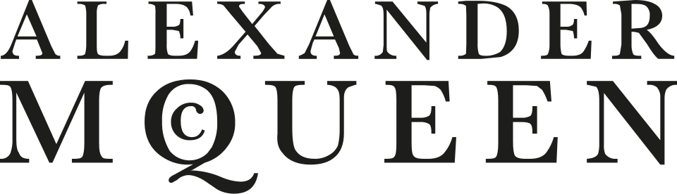

알렉산더 맥퀸 Alexander McQueen
알렉산더 맥퀸(Alexander McQueen)은 1992년 디자이너 알렉산더 맥퀸이 설립한 영국의 럭셔리 패션 하우스다. 오트쿠튀르, 프레타포르테, 고급 가죽 액세서리와 신발을 전문으로 한다.
최종 업데이트

알렉산더 맥퀸은 어떤 브랜드인가
이 브랜드는 오트쿠튀르, 프레타포르테, 고급 가죽 액세서리와 신발을 전문으로 하는 영국의 럭셔리 패션 하우스로, 본사는 런던에 있고 모기업은 케링이다. 창업자 알렉산더 맥퀸은 초기 컬렉션에서 논란과 충격 요법으로 명성을 쌓아 '앙팡 테리블'과 '영국 패션의 불량배'라는 별명을 얻었다.
그는 호화롭고 파격적인 런웨이 쇼를 기획했으며, 1996년에서 2003년 사이 '올해의 영국 디자이너' 상을 네 차례 수상했다. 2010년 창업자가 사망한 뒤 세라 버턴이 2023년까지 크리에이티브 디렉터를 맡으며 하우스를 이끌었다.
2022년 3월부터 잔필리포 테스타가 최고경영자(CEO)를 맡고 있다. 2023년 10월부터는 숀 맥기르가 크리에이티브 디렉터를 맡고 있다.
알렉산더 맥퀸은 어떻게 시작되고 성장했나
이 브랜드는 1992년 디자이너 알렉산더 맥퀸이 설립했다. 그는 석사 졸업 작품을 포함해 자신의 런던 라벨을 위해 총 36개의 컬렉션을 디자인했다.
2000년 12월 구찌 그룹이 맥퀸 회사의 지분 51%를 인수하고 그를 크리에이티브 디렉터로 임명했으며, 이후 런던, 밀라노, 뉴욕, 로스앤젤레스, 라스베이거스에 매장을 열었다. 인수 이후 캣워크 프레젠테이션은 런던에서 파리로 옮겨져 2001년 10월 6일 2002 봄/여름 컬렉션을 시작으로 파리에서 열렸다.
2010년 맥퀸이 사망한 뒤 14년 동안 그의 부관이었던 세라 버턴이 크리에이티브 디렉터가 되었다.
알렉산더 맥퀸의 브랜드 아이덴티티는 무엇인가
창업자의 충격적이고 파격적인 런웨이 쇼로 명성을 쌓은 영국 럭셔리 하우스로, 케링 산하에서 오트쿠튀르와 프레타포르테를 전개한다.
알렉산더 맥퀸의 대표 제품과 서비스는 무엇인가
2005년 봄/여름에 첫 남성복 컬렉션을 출시했고, 2008년 6월 첫 여성 프리스프링 컬렉션을 선보였으며 2010년 봄부터 크루즈 컬렉션을 출시해 왔다. 2006년에는 저렴한 가격대의 디퓨전 라인 McQ를 출시했으나, 2022년 6월 기준 이 라인은 중단된 상태이다.
2003년 조향사 Jacques Cavallier와 협력해 첫 향수 Kingdom을 출시했고, 2006년 두 번째 향수 My Queen을 내놓았다. 2004년 Safilo와 라이선스 계약을 맺고 아이웨어 라인을 출시했으며, 2005년 PUMA AG와 협력해 신발 라인을 제작했다.
2008년에는 미국에 온라인 스토어를 개설했다.
알렉산더 맥퀸은 지금 어떤 상태인가
모기업은 케링이다. 2022년 3월부터 잔필리포 테스타가 최고경영자(CEO)를 맡고 있으며, 2023년 10월부터 숀 맥기르가 크리에이티브 디렉터를 맡고 있다.
전 세계 매장 수는 2020년 말까지 100개로 증가했고, 2020년 매출은 5억 유로로 추정되었다. 신임 CEO 임명 이후 McQ 라인은 중단된 상태이다.
알렉산더 맥퀸 로고는 어떻게 변해왔나
시기는 위키데이터 로고 기간 또는 위키미디어 커먼즈 파일 정보 기준입니다. 이미지를 누르면 원본 파일과 라이선스를 볼 수 있습니다.
자주 묻는 질문
알렉산더 맥퀸는 어느 나라 브랜드인가요?
알렉산더 맥퀸는 영국의 패션·럭셔리 브랜드입니다.
알렉산더 맥퀸는 언제 설립되었나요?
알렉산더 맥퀸는 1992년 설립되었습니다.
알렉산더 맥퀸의 브랜드 아이덴티티는 무엇인가요?
창업자의 충격적이고 파격적인 런웨이 쇼로 명성을 쌓은 영국 럭셔리 하우스로, 케링 산하에서 오트쿠튀르와 프레타포르테를 전개한다.
알렉산더 맥퀸의 대표 제품은 무엇인가요?
2005년 봄/여름에 첫 남성복 컬렉션을 출시했고, 2008년 6월 첫 여성 프리스프링 컬렉션을 선보였으며 2010년 봄부터 크루즈 컬렉션을 출시해 왔다.
알렉산더 맥퀸는 어느 기업이 소유하고 있나요?
모기업은 케링이다.
알렉산더 맥퀸의 창업자는 누구인가요?
알렉산더 맥퀸의 창업자는 알렉산더 매퀸입니다(위키데이터 기준).
알렉산더 맥퀸의 본사는 어디에 있나요?
알렉산더 맥퀸의 본사는 런던에 있습니다(위키데이터 기준).
출처와 검증
알렉산더 맥퀸 관련 참고: 공식 웹사이트 · 위키데이터 Q13882231 · 한국어 위키백과 · 영어 위키백과. 브랜드명은 한글과 원어를 함께 표기하되 데이터에 없는 표기는 만들지 않습니다. 기원 국가·설립연도는 검수된 정의문에서 확인된 값을 우선하고, 없을 때만 공식 웹사이트 URL이 일치하는 위키데이터 개체의 값을 씁니다. 위키데이터 값은 2026-11-13 기준입니다.